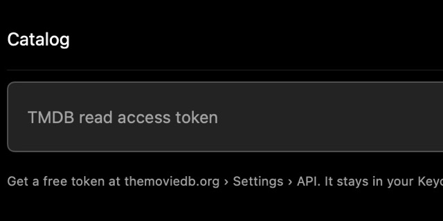
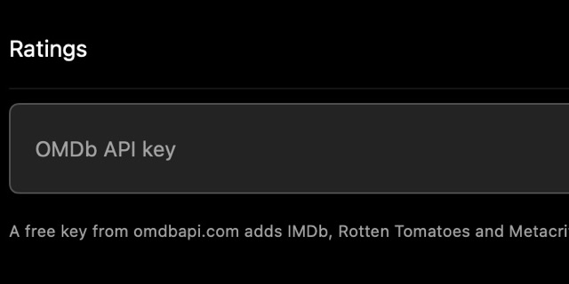
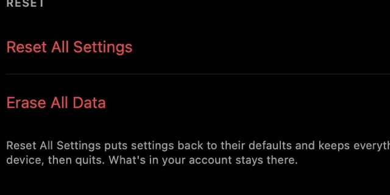

Install
Get Bluebox on your Mac, iPhone or iPad, then set up the few things that make it better.
What you need#
- iPhone or iPadiOS 18 or later, and a sideloading app such as AltStore, SideStore or Feather.
- MacmacOS 15 or later on an Apple silicon Mac (M1 or newer). Intel Macs aren't supported.
- No accountBluebox works on its own. Sync, the remote and Watch Party can be added later (Sync).
Mac#
- Open it and drag Bluebox onto Applications.
- Open Bluebox from Applications.
The first time: “Apple could not verify Bluebox”#
macOS stops each new version once, because Bluebox isn't from the App Store. That's expected.
- On the warning, click Done (not Move to Bin).
- Open System Settings › Privacy & Security and scroll down.
- Click Open Anyway, enter your password, then Open Anyway again.
Technical details · Check the download is genuine
Bluebox is signed with its own certificate, not a paid Apple Developer ID, so Apple hasn't notarized it. Every Mac release is signed with the self-signed Bluebox Open Source certificate, SHA-1 8DA48EE5DF68786C0B40A9D6689453892A1F75D0. To check it, in Terminal:
codesign -v --strict --deep -R='identifier "app.bluebox.Bluebox.mac" and certificate leaf = H"8da48ee5df68786c0b40a9d6689453892a1f75d0"' /Applications/Bluebox.appNo output means the signature matches. Anything else means it isn't the app released on GitHub: delete it and download it again from the Releases page.
If your Mac asks for your password#
That's macOS asking whether Bluebox may read its saved keys. Type your Mac password and click Always Allow. It lasts across updates.
iPhone and iPad#
With AltStore, SideStore or Feather#
- On your iPhone, open the add page.
- Tap Open in AltStore (or SideStore, or Feather) and confirm.
- Open Bluebox in the source and tap Get.
Updates show up in your sideloading app.
With FlareStore, ESign or another app#
- Copy the source link (the add page has a Copy button):
https://raw.githubusercontent.com/BCYAYAY14/bluebox/main/source.json - In your app, open Sources, tap + and paste it.
- Open Bluebox and tap Get.
Just the file#
Download the latest IPA to sideload it yourself. Settings › About tells you when a new version is out.
Technical details · Opening a sideloading app directly
add.html?to=altstore opens AltStore straight away; ?to=sidestore and ?to=feather work too.
First things to set up#
Bluebox works straight away. These make it better, most useful first:

Artwork and cast: paste a free TMDB token in Settings › Catalog & Ratings. Faster streams: add your debrid service, if you have one.
Faster streams: add your debrid service, if you have one.

Ratings: a free OMDb key adds IMDb, Rotten Tomatoes and Metacritic scores. More than one device? Set up sync.
More than one device? Set up sync.
How to get a TMDB token
Make a free account at themoviedb.org, request an API key under Settings › API, and copy the long API Read Access Token. Paste it in Settings › Catalog & Ratings › TMDB Token and save. Bluebox checks it and keeps it in the Keychain. Without a token, titles come from Cinemeta, and the Torrentio and StremThru add-ons find releases.
Every setting can be found with the search field at the top of Settings.
Finding your way around#
- HomeContinue Watching, My List, Top Picks and what's new. Add-on catalogs can be rows too (Settings › Torrents & Debrid › Add-on Catalogs on Home).
- Along the topTV Shows, Movies, New & Hot, My List and Downloads. On the Mac, ⌘1–⌘6.
- SearchUnderstands years (“dune 2021”) and has filters. ⌘F on the Mac.
- A poster's menuRight-click, or touch and hold: My List, Download, Start a Party and more.
- Your languageEnglish, Spanish, French, German, Italian, Brazilian Portuguese, Japanese, Korean or Simplified Chinese (Settings › Language).
Updates#
- MacA blue dot on the profile button means a new version. Install it in Settings › About.
- iPhone and iPadUpdates arrive in your sideloading app. Settings › About also says when one is out.
What's new in each version: the changelog.
Technical details · How the Mac updater checks a download
Bluebox checks GitHub's latest release once a day. The updater installs only a Bluebox signed with the release certificate, checks the download against GitHub's checksum, and puts the old version back if the new one fails its check. Releases are all signed with the same certificate, so a Keychain “Always Allow” lasts across updates.
Uninstall#

Choose Settings › Storage › Erase All Data. Bluebox quits.- Open it once more: it deletes its downloads, library, settings and keys on this device.
- Delete the app: drag it to the Bin, or touch and hold its icon.
If you set up sync, your library stays in your Supabase project until you delete the project in Supabase's dashboard.
Technical details · Build from source
You need Xcode and XcodeGen. The code is in the Bluebox folder of the repository.
brew install xcodegen
cd Bluebox && xcodegen generate && open Bluebox.xcodeprojPick the Bluebox-iOS or Bluebox-macOS scheme and set your own team under Signing & Capabilities (or change DEVELOPMENT_TEAM in project.yml). Nothing needs a key to build. The torrent engine ships prebuilt; scripts/build-libtorrent.sh rebuilds it from source (brew install cmake ninja boost first). Run the tests with cd Bluebox/Packages/BlueboxKit && swift test.